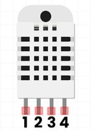

Iot dht22 apresentacao
title: 🤖 IOT - Detalhes do Sensor DHT22 summary: Aprenda tudo sobre o sensor DHT22: funcionamento, montagem, uso com Arduino e aplicações em projetos IoT. authors: - Luis Rodrigo - Papagaio tags: - iot - DHT22 - AM2302 - sensor - arduino - temperatura - umidade
date: 2025-11-04 icon: material/home_iot_device lang: pt
🤖 IOT - Sensor DHT22¶
O DHT22 é um componente essencial para projetos de monitoramento ambiental e é amplamente utilizado em conjunto com placas como Arduino Uno e Nano.
 Explorando o Sensor DHT22 (AM2302)¶
Explorando o Sensor DHT22 (AM2302)¶
O DHT22 (também conhecido como AM2302) é um sensor digital de baixo custo, mas de alta precisão, que mede a umidade relativa do ar e a temperatura. Ele é uma melhoria notável em relação ao seu antecessor (DHT11), oferecendo uma faixa de medição maior e maior precisão.
Ele se tornou um componente essencial em projetos de IoT e robótica devido à sua boa precisão, ampla faixa de medição e facilidade de interfaceamento com microcontroladores populares como o Arduino.
A importância do DHT22 em projetos IoT reside na sua capacidade de fornecer dados climáticos cruciais. Ele permite a criação de sistemas inteligentes que reagem às condições ambientais.
🌡️ Aplicações Típicas:
- Automação Residencial/Climatização: Monitoramento e controle automático de ar-condicionado e desumidificadores.
- Agricultura Inteligente (Smart Farming): Controle de temperatura e umidade em estufas, garantindo o clima ideal para o crescimento das culturas.
- Monitoramento Ambiental: Criação de estações meteorológicas pessoais e monitoramento de ambientes sensíveis (ex: museus, depósitos).
- Utilidade com Arduino: O DHT22 é uma escolha popular para iniciantes e intermediários, pois utiliza apenas um pino digital para comunicação, simplificando a ligação e economizando recursos do microcontrolador.
🌡️ Nível de Dificuldade: - Iniciante/Intermediário. - A parte de hardware é simples, mas a comunicação serial (protocolo one-wire) requer o uso de bibliotecas, o que eleva ligeiramente o nível de dificuldade em relação a sensores puramente analógicos.
 Visão Geral e Especificações do Sensor¶
Visão Geral e Especificações do Sensor¶
2.1 O que é e Como Funciona 🌡️¶
O DHT22 é composto por dois elementos principais:
- Sensor de Umidade Capacitivo: Dois eletrodos com um substrato de polímero que retém umidade. A variação da umidade relativa do ar altera a capacitância do polímero, e essa mudança é convertida em um sinal elétrico.
- Termistor NTC (Coeficiente de Temperatura Negativo): Um resistor cuja resistência diminui à medida que a temperatura aumenta, permitindo a medição precisa da temperatura.
Um microcontrolador interno de 8 bits no sensor processa as leituras do termistor e do sensor capacitivo, calibra os dados e os envia ao Arduino (ou outro microcontrolador) através de um protocolo serial de barramento único (one-wire).
-
Tipo de Sinal: Digital Serial. O Arduino envia um pulso de requisição e o DHT22 responde com um fluxo de dados de 40 bits (5 bytes). Esses dados contêm as informações de umidade (integral e decimal), temperatura (integral e decimal) e um checksum para verificação de erros.
-
Vantagens Resumidas: Maior precisão e faixa de medição que o DHT11.
-
Limitações Resumidas: Taxa de amostragem lenta (mínimo de 2 segundos entre leituras) e sensibilidade ao comprimento do cabo.
2.2 Especificações Técnicas 🌡️¶
| Parâmetro | Valor Típico | Observação e Impacto no Arduino |
|---|---|---|
| Tensão de Operação (VCC) | 3.3V a 5.5V | Compatível tanto com Arduino (5V) quanto com ESP32/ESP8266 (3.3V). |
| Corrente Típica (Leitura) | 1.0 a 2.5 mA | Baixo consumo. Pode ser alimentado diretamente pelo pino de 5V ou 3.3V do Arduino. |
| Faixa de Medição (Umidade) | 0% a 100% UR | Ampla faixa, ideal para estufas ou ambientes úmidos. |
| Faixa de Medição (Temperatura) | -40°C a 80°C | Excelente alcance para monitoramento em diversas condições climáticas. |
| Precisão (Umidade) | ±2% UR (máx. ±5% UR) | Alta precisão para projetos amadores e intermediários. |
| Precisão (Temperatura) | ±0.5°C | Alta resolução e precisão. |
| Resolução | 0.1 (0.1°C / 0.1% UR) | Permite leituras mais detalhadas que outros sensores de baixo custo. |
| Tipo de Saída | Digital Serial (One-Wire) | Necessita de uma biblioteca para decodificar o sinal e obter os valores. |
| Tempo de Resposta | \< 2 segundos | Período mínimo entre leituras para garantir precisão. |
| Dimensões | ~15 x 25 x 7 mm | Compacto, varia conforme o encapsulamento (módulo ou sensor puro). |
| Fabricante / Modelo | ASAIR / AM2302 | O nome técnico do DHT22. |
Impacto dos Parâmetros no Uso com Arduino: O mais importante é o Tempo de Resposta de 2 segundos. Isso significa que você não deve solicitar novas leituras do sensor em um intervalo menor que 2 segundos, ou as leituras serão inválidas ou repetidas. A comunicação digital serial (one-wire) exige o uso de uma biblioteca robusta para lidar com o protocolo de tempo específico.
2.3 Vantagens e Limitações 🌡️¶
| Vantagens | Limitações |
|---|---|
| Alta Precisão (Melhor que DHT11) | Taxa de Amostragem Lenta (Mínimo 2 segundos entre leituras). |
| Ampla Faixa de Operação (-40°C a 80°C). | Sensível ao Comprimento do Cabo (Cabos longos podem exigir resistores de pull-up maiores ou tensão de alimentação mais alta). |
| Saída Digital Calibrada (Não requer conversor A/D ou calibração complexa). | Requer Biblioteca Específica para decodificar o protocolo one-wire. |
| Baixo Consumo de Energia (Principalmente em stand-by). | Pode Ser Sensível a Interferências elétricas (noise) se o circuito não for bem montado (uso do resistor de pull-up é crucial). |
| Excelente Custo-Benefício (Equilíbrio entre preço e desempenho). | Qualidade da Calibração pode variar entre fabricantes (opte por modelos de marca conhecida). |
 Hardware: Conexão com o Arduino¶
Hardware: Conexão com o Arduino¶
A conexão do DHT22 é simples, mas requer atenção ao uso de um resistor de pull-up no pino de dados, conforme as boas práticas do protocolo one-wire.
3.1 Materiais Necessários¶
- 1x Sensor de Temperatura e Umidade DHT22 (ou Módulo DHT22/AM2302).
- 1x Placa Arduino (ex: Arduino Uno, Nano, Mega).
- 1x Resistor de Pull-up: 4.7 kΩ a 10 kΩ (Valor mais comum é 4.7 kΩ). Função: Garantir que o pino de dados esteja em um estado lógico bem definido (HIGH) quando o sensor não estiver transmitindo, garantindo a comunicação correta.
- Jumpers Macho-Macho.
- 1x Protoboard (Placa de ensaio).
- 1x Fonte de Alimentação (Via USB ou externa, para alimentar o Arduino).
- Opcional: Kit Básico de Iniciantes (Arduino + Jumpers + Protoboard).
📌 Pinagem (Versão 4 Pinos)¶
O DHT22 possui 4 pinos (embora frequentemente seja vendido montado em um módulo de 3 pinos):

- VCC (Pino 1): Conecta-se ao +5V (ou 3.3V) do Arduino.
- DATA (Pino 2): O pino de comunicação de dados. Deve ser conectado a um pino digital do Arduino.
- NC (Pino 3): Não conectado (Not Connected).
- GND (Pino 4): Conecta-se ao GND (Terra) do Arduino.
| Pino do Sensor (4 pinos) | Função | Pino Arduino (Ex: Uno) | Tipo de Sinal | Observações |
|---|---|---|---|---|
| Pino 1 (VCC) | Alimentação Positiva | 5V ou 3.3V | Tensão de Alimentação | Conecte ao 5V do Arduino para maior estabilidade. |
| Pino 2 (DATA) | Comunicação Serial | Pino Digital (Ex: D2) | Digital Serial | Conexão crucial! Requer o resistor de pull-up. |
| Pino 3 (NC) | Não Conectado | N/A | N/A | Deixe livre. |
| Pino 4 (GND) | Terra / Referência | GND | Terra | Conecte ao GND do Arduino. |
Observação Importante sobre o Pino DATA: - O pino de dados geralmente requer um resistor de pull-up de 4.7 kΩ a 10 kΩ conectado entre o pino DATA e o pino VCC (alimentação) para garantir que o sinal digital seja lido corretamente pelo Arduino.
Observação: Se estiver usando a versão em módulo de 3 pinos, o resistor de pull-up geralmente já está embutido na placa.
3.3 Passo a Passo da Montagem¶
- Conecte a Alimentação: Com o Arduino desligado (ou sem o cabo USB), conecte o pino VCC do DHT22 ao pino 5V do Arduino e o pino GND do DHT22 ao pino GND do Arduino.
- Conecte o Pino de Dados: Ligue o pino DATA (Pino 2) do sensor a um pino digital do Arduino (Ex: Pino D2).
- Adicione o Resistor (Se necessário): Conecte uma extremidade do resistor de 4.7 kΩ no pino DATA e a outra extremidade no pino VCC (5V). Isso é essencial para estabilizar a linha de dados.
- Verificação: Revise todas as conexões, especialmente o VCC e o GND. Boas Práticas: Sempre inicie a montagem sem alimentação e só ligue após a verificação final.
 Software: Programação na Arduino IDE¶
Software: Programação na Arduino IDE¶
A leitura do DHT22 é feita por software, por meio de uma biblioteca que implementa o protocolo one-wire para extrair os dados de temperatura e umidade.
4.1 Instalação da Biblioteca 🏠¶
A biblioteca mais utilizada e recomendada para o DHT22, que suporta vários sensores da família DHT, é a:
- Nome da Biblioteca:
DHT sensor library - Autor/Mantenedor: Adafruit
🛠️ Instruções de Instalação:
- Abra a Arduino IDE.
- Vá em Esboço (Sketch) → Incluir Biblioteca (Include Library) → Gerenciar Bibliotecas (Manage Libraries...).
- Na barra de pesquisa do Gerenciador de Bibliotecas, digite:
DHT sensor library. - Localize a biblioteca da Adafruit e clique em Instalar.
- Dependência: Em alguns casos, o Gerenciador de Bibliotecas pode solicitar a instalação de outra dependência:
Adafruit Unified Sensor(também da Adafruit). Instale-a se for solicitada.
A biblioteca da Adafruit é a mais recomendada por ser bem documentada, atualizada e robusta na leitura e decodificação do protocolo do DHT22.
4.2 Aplicações Práticas 🏠¶
O DHT22 é a base para uma infinidade de projetos de monitoramento.
- Estação Meteorológica Doméstica: Medição contínua de temperatura e umidade, exibindo os dados em um display LCD ou OLED.
- Automação de Estufa Inteligente: Controle de ventilação ou nebulização com base nos limites de umidade e temperatura. Integração com relés (acionados por limites de temperatura e umidade) e um ESP32/ESP8266 para envio de dados via MQTT ou para um dashboard (ex: ThingSpeak).
- Alarme de Condição Ambiental: Alerta sonoro (buzzer) ou visual (LED) quando a temperatura ou umidade excede um valor seguro (ex: alerta de umidade alta em um depósito de documentos).
- Monitoramento de Sala de Servidores (Data Center): Sistema de vigilância de temperatura que envia notificações (e-mail, Telegram) em caso de superaquecimento. Integração com ESP8266 e serviços de nuvem.
- Termostato Inteligente (Climatização): Controle preciso de um sistema de aquecimento ou resfriamento, mantendo o ambiente na temperatura ideal pré-definida pelo usuário.
- Gerador de Ponto de Orvalho: Cálculo do Ponto de Orvalho (temperatura na qual o vapor d'água se condensa) a partir dos dados de temperatura e umidade do DHT22.
- Monitoramento de Incubadoras: Manutenção da umidade e temperatura em faixas muito estreitas para incubação de ovos ou culturas.
- Dashboards IoT com Visualização de Dados: Uso de um ESP32 para coletar os dados do DHT22 e enviá-los em tempo real para plataformas como Ubidots ou Blynk, permitindo a visualização gráfica histórica.
- Controle de Umidificação de Instrumentos Musicais: Manutenção de umidade ideal em gabinetes para violões ou outros instrumentos sensíveis à umidade.
- Aviso de Umidade Alta para Prevenção de Mofo: Monitoramento de armários e áreas de sombra para acionar um pequeno ventilador/exaustor antes que o nível de umidade fique perigoso.
4.3 Funcionalidades Principais da Biblioteca 📖¶
A biblioteca Adafruit simplifica drasticamente a leitura do sensor, abstraindo a complexidade do protocolo de comunicação. As principais funções que você utilizará são:
| Função | Descrição | Retorno |
|---|---|---|
dht.begin() |
Inicializa a comunicação com o sensor. Deve ser chamada no setup(). |
void |
dht.readHumidity() |
Lê a Umidade Relativa (UR) do sensor. | float (ou valor de erro se falhar) |
dht.readTemperature() |
Lê a Temperatura em graus Celsius (°C). | float (ou valor de erro se falhar) |
dht.readTemperature(true) |
Lê a Temperatura em graus Fahrenheit (°F). | float (ou valor de erro se falhar) |
dht.computeHeatIndex(t, h, false) |
Calcula o Índice de Calor (sensação térmica) em Celsius. Requer a temperatura (t) e a umidade (h) como argumentos. |
float |
dht.computeHeatIndex(t, h, true) |
Calcula o Índice de Calor em Fahrenheit. | float |
4.4. Exemplo Prático: Leitura Simples de Temperatura e Umidade 🖥️¶
O exemplo a seguir demonstra como configurar o Arduino (Uno, Nano, etc.) para ler e exibir os valores de umidade e temperatura do DHT22 no Monitor Serial.
4.4.1 Código de Exemplo (Sketch) 💾¶
// 1. Inclusão das Bibliotecas:
// A biblioteca Adafruit_Sensor é uma dependência da DHT.h e deve ser incluída.
#include "Adafruit_Sensor.h"
#include "DHT.h"
// 2. Definições de Hardware e Tipo de Sensor:
#define DHTPIN 2 // Pino digital do Arduino onde o pino DATA do DHT22 está conectado
#define DHTTYPE DHT22 // Define o tipo de sensor que estamos usando (pode ser DHT11, DHT21/AM2301, ou DHT22/AM2302)
// 3. Inicialização do Objeto DHT:
// Cria uma instância (objeto) 'dht' para interagir com o sensor.
// O objeto recebe o pino e o tipo de sensor definidos acima.
DHT dht(DHTPIN, DHTTYPE);
void setup() {
// Inicializa a comunicação Serial para exibir os dados no Monitor Serial.
Serial.begin(9600);
Serial.println(F("--- DHT22 Teste de Leitura ---"));
// Inicializa o sensor DHT22.
dht.begin();
}
void loop() {
// O DHT22 tem um ciclo de leitura lento. Recomenda-se esperar pelo menos 2 segundos (2000ms)
// entre as leituras para garantir que o sensor tenha tempo de converter os dados.
delay(2000);
// --- 1. Realiza as Leituras ---
// Lê a umidade. Retorna 'NaN' (Not a Number) se a leitura falhar.
float h = dht.readHumidity();
// Lê a temperatura em Celsius. Retorna 'NaN' se a leitura falhar.
float t = dht.readTemperature();
// --- 2. Verifica Falha na Leitura ---
// 'isnan()' verifica se o valor retornado não é um número (indicando erro).
if (isnan(h) || isnan(t)) {
Serial.println(F("Falha ao ler do sensor DHT!"));
return; // Sai do loop para tentar novamente no próximo ciclo.
}
// --- 3. Cálculo Adicional (Índice de Calor) ---
// Calcula o Índice de Calor (sensação térmica) em Celsius.
// O terceiro parâmetro 'false' indica Celsius (true seria Fahrenheit).
float hic = dht.computeHeatIndex(t, h, false);
// --- 4. Exibição dos Dados no Monitor Serial ---
Serial.print(F("Umidade: "));
Serial.print(h);
Serial.print(F(" %\t")); // '\t' é um tabulador para formatar.
Serial.print(F("Temperatura: "));
Serial.print(t);
Serial.print(F(" *C\t"));
Serial.print(F("Sensação Térmica: "));
Serial.print(hic);
Serial.println(F(" *C"));
}
 Observações Adicionais e Melhores Práticas¶
Observações Adicionais e Melhores Práticas¶
5.1 Dicas de Hardware 💡¶
- Pino de Dados: Certifique-se de que o valor de
#define DHTPIN(neste caso,2) corresponde ao pino digital do Arduino onde o pino DATA do seu DHT22 (ou módulo) está conectado. - Resistor de Pull-up: Se estiver usando o sensor puro de 4 pinos, não negligencie o resistor de 4.7 kΩ entre o DATA e o VCC. Ele é vital para o protocolo one-wire. A falta dele é a causa mais comum de leituras falhas (
Falha ao ler do sensor DHT!). - Fontes de Alimentação: Em projetos com ESP32/ESP8266, utilize a alimentação de 3.3V, mas verifique se o sensor que você adquiriu é compatível (a maioria é). No Arduino Uno, prefira o 5V.
- Cabos: Para cabos de dados longos (acima de 1 metro), a tensão de 5V é mais recomendada. Se houver falha de leitura, tente reduzir o comprimento do cabo.
5.2 Armadilhas Comuns (Troubleshooting) ⚠️¶
- Leituras Incorretas/NaN (Not a Number): O erro mais comum. Geralmente causado pela falta do resistor de pull-up, inversão dos pinos de alimentação (VCC/GND) ou por tentar ler o sensor em intervalos muito curtos (abaixo de 2 segundos).
- Ruído Elétrico: Se o sensor estiver perto de motores, relés ou fontes de grande consumo, o ruído pode corromper a comunicação serial. Mantenha o pino DATA o mais distante possível dessas fontes.
- Conexão Invertida: O VCC e o GND são comumente invertidos; verifique o datasheet do seu modelo, pois ligar de forma errada pode danificar o sensor.
5.3 Melhores Práticas de Código ✅¶
- Intervalo de Leitura (Delay): Garanta um atraso (delay) ou controle com
millis()de pelo menos 2000 milissegundos (2 segundos) entre as chamadas da função de leitura do DHT22. Tentar ler mais rápido resultará em dados inválidos. - Verificação de Erros (
isnan()): Sempre verifique a validade da leitura antes de usar os dados. A funçãoisnan()da biblioteca Adafruit é crucial: - Uso de
float: As bibliotecas do DHT22 geralmente retornam a umidade e a temperatura como números de ponto flutuante (float) devido à resolução de 0.1, garantindo a precisão dos dados.
5.3 Aplicações Avançadas 🌐¶
- Integração com ESP8266/ESP32: Substitua o Arduino por um ESP8266 (NodeMCU) ou ESP32. Eles possuem Wi-Fi e Bluetooth integrados, permitindo que os dados do DHT22 sejam enviados diretamente para a internet.
- Envio de Dados via MQTT: Protocolo leve e eficiente para enviar leituras do DHT22 para um broker (servidor) MQTT, permitindo que vários dispositivos subscrevam e usem esses dados em tempo real.
- Dashboards na Nuvem: Utilize serviços como ThingSpeak, Ubidots, ou Plataformas Abertas para visualizar gráficos históricos e configurar alertas com base nas leituras de temperatura e umidade.
5.4 Manutenção e Calibração 🔧¶
- Cuidados Físicos: O sensor é sensível à poeira e ao excesso de condensação. Evite tocar diretamente na área sensível e proteja-o do contato direto com a água ou vapor, especialmente se não estiver em um invólucro à prova d'água.
- Limpeza: Se necessário, limpe a área do sensor com ar comprimido ou um cotonete levemente úmido com água destilada. Nunca use álcool ou solventes.
- Recalibração: O DHT22 é pré-calibrado de fábrica. Com o tempo (especialmente após 1 ano), sua precisão pode diminuir. Em aplicações críticas, é necessário realizar a compensação por software ou a substituição do sensor por um novo, pois a calibração de hardware não é trivial para o usuário final.